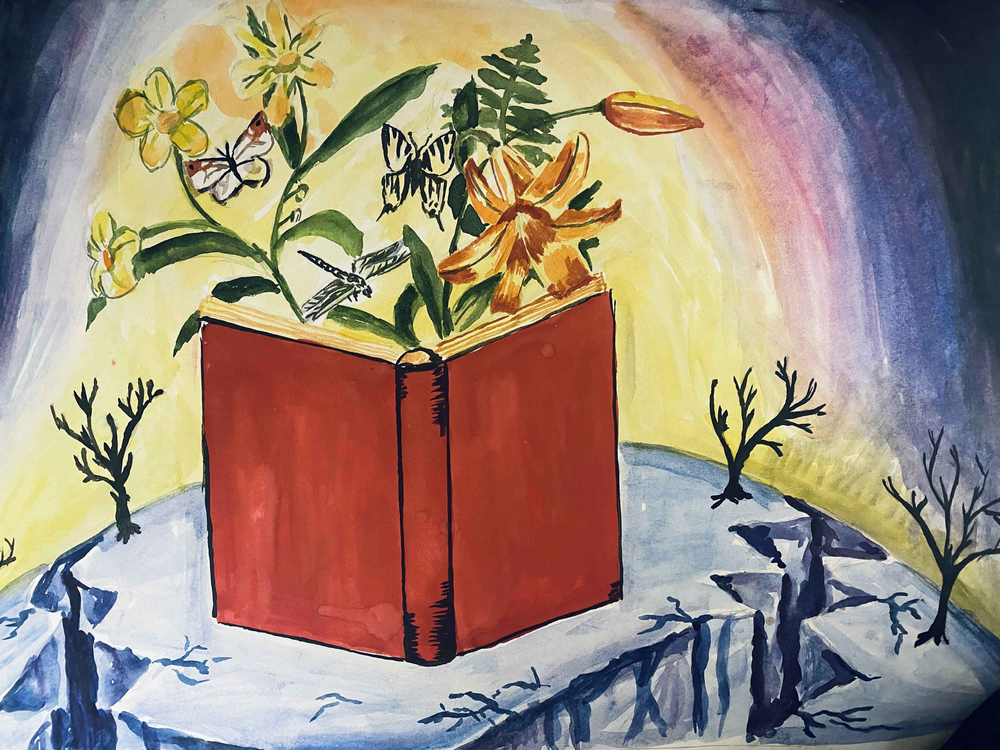
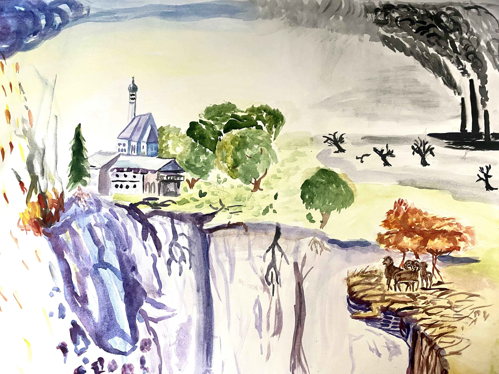

Арт работы

Турсунов Валиджон
Люди ждут подходящего момента Человек перед другими, надевая маску справедливости, отказывается совершить коррупцию, но если он находится один в помещении и никто не видит его, он с удовольствием совершает это грязное дело.Шукруллоева Шабрез
Домашнее наслие Если смотреть на статус Кво, то одной из серьезных проблем общества является домашнее насилие и оно в Центральной Азии особо распространена. Женщина, которая подвергалась домашнему насилию, перед обществом всегда наносит гримас,как буд то у нее все хорошо. Но, несмотря на это она надеется и верит в яркое и светлое будущее (свет в глазах и солнце). Дети тоже становятся свидетелями и жертвами происходящего в семье, поэтому во сне видет разных героев из мультфильмов. Для ребенка же это целое детство. Цепь и птички описывают зависимость и свободу, в данном случаи речь идёт о жертве насилия.Тимур Шарипов
Браконьерство в центральной Азии и массовое истребление редких животных является большой проблемой по сей день. Легальная международная торговля животными в год составляет более 317 000 живых птиц, более 2 млн. рептилий, 2,5 млн. крокодильих шкур, 1,5 млн. шкур ящериц, 2,1 млн. шкур змей, 73 тонны икры, около 20 000 охотничьих трофеев. Нелегальная торговля - по данным Интерпола, 6-9 миллиардов долларов в год. Это угрожает 30 тысячам видов животных по всему миру. Всего осталось около 6000 особей снежныйх барсов на всей планете. Человечество наступает, уничтожает этих животных. Их используют для украшений и трофея. Но никто не понимает, насколько это грозит человечеству. А жестокости человека нет предела, поэтому хочется призвать всех - остановить эту бесконечную цепь насилия и истребления над живыми существами 🥺❤️Тимур Шарипов
«Островок жизни» Народ в виде маленького городка окружён тёмными мрачными высотками. Городок светится, там люди живут, дома старенькие, много зелени, дети играют, кто-то вешает бельё. Этим хочется показать то, что люди – это часть государства, а не высотки. Что вот этот маленький островок и есть тот самый центральный объект, ради чего государство должно существовать. Этот островок и есть решения – которые ДОЛЖНЫ приниматься, а не идти из тёмных мрачных высоток. Цвета вокруг мрачные, пасмурные, тёмно-синие. А городок светлый, тёплый и светящийся. На вкус этот островок как тёплые венские вафли с клубничной начинкой, политый сгущённым молоком. А мрак вокруг городка, как горькие орехи (не люблю орехи). Которые покрылись изнутри гнилью, где сидит огромная гусеница пожирая всё. Хотя снаружи кажутся крепкими и прочными… Пахнет городок очень приятно, как свежее лавандовое мыло. Таким мылом и кондиционером люди стирают бельё, которое висит на балконах и улицах людей. Всё душистое свежее чистое и такое искреннее. Очень кажется родным и домашним. Этот островок звучит как спокойная indie или country музыка. Потому что никуда не спешит и не торопится. А мрачные высотки словно наблюдают за ним, и ощущение будто они медленно перемещаются. Звучит как ледокол, от которого исходит глухой звук «Гууум» и шарахается ударяясь металлическим корпусом. Так и эти здания скользят по земле. Направление: антиутопия, художественный цифровой стиль маслянной краски. Нарисована иллюстрация на перьевом дисплее в цифровом формате. Структура: передний план ярких насыщенных цветов и задний план в мрачных приглушённых тонах.Ахмедова Фарзона и Умаров Мирзокарим
Мусор захватывает планету Если коротко, то наша картина раскрывает тему экологии. Эта проблема касается всего мира и мы - не исключение. Я читала, что каждый ДЕНЬ в свалку привозят несколько тонн мусора. Лишь малую часть перерабатывают, остальное сжигают или закапывают. И ещё, когда мы куда-то идём с семьёй отдыхать, у озер всегда очень много мусора, пластика, пакетов. Этим мы показали проблему безответственности людей к экологии. На картине изображён кит который задыхается от мусора. Мы хотели показать что безответственность людей имеет негативное влияние на все окружение.Хаутова Ира
"Бухарский Олень" - картина нитью Графичное изображение краснокнижного животного нитью на черном фоне олицетворяет страшную проблему современности - вымирание без возможности возобновить популяцию. Черный глянцевый фон олицетворяет смерть. Красными нитями изображён едва понятный образ животного - Бухарского оленя. Красные нити олицетворяют красную книгу, кровь, сигнал бедствия и важность данной проблемы. Картину можно также отнести к теме проблемы экологии.Негматов Бахтовар
Неприкасаемость законом. Превышение полномочий , под маской закона творить беззаконие, неприкосаемость законом. Постер представляет из себя старую газетную бумагу, где статья показывает «двойные стандарты». С левой стороны нарисована рука представляющая «руку народа», а с другой человек из высшего чина, который надел маску закона и творит беззаконие и его маска давно уже вся в порче и заразе в виде разломов. Разломы, потому что маска уже не выдерживает его испачканное лицо и грязь его лица уже даже маска не скрывает и вырывается наружу грязь. Рука народа тянется к лицу чина с желанием сорвать эту маску. По сторонам есть статьи, одна статья про руку – Сегодня утром предводитель правозащитного движения «Рука Народа» был задержан и обвинен в измене государству … Другая про чина с маской – В ночь с 15 го до 16 числа в Рутритрском округе машиной были сбиты подростки в возрасте 17-18 лет, данные о злодеятеле скрываются властями но по некоторым данным нам известно что это …. Лицо в маске в стихах унижает и манит «руку народа» к себе, а «рука народа» в своем стихе говорит, что доберется до него и сорвет эту маску .Джураев Абдулвафо
Заключённые руки Люди сами не понимая того ограничивают себя, не вдаваясь в подробности соглашаются с мнениями других людей (доверяют власть непонятным людям). Заключённые руки по своей воле отдают ключи от наручников, а рука другого человека хочет забрать этот ключ, и отличительная черта руки, которая забирает ключ состоит в том, что на ней видно, что человек одет в костюм, это символизирует, что он работник государственной структуры.Джураев Абдулвафо
Семейное фото На руках родителей надеты наручники, а руки детей свободны. Это отсылка к тому, что чем человек старше и чем у него больше осознания себя и окружающих вещей, чем больше у человека ценностей, тем легче его подчинить. А дети делают то что им хочется, а не то что им говорят.Ахмедова Фарзона
Ее образование – наше будущее. В странах Центральной Азии образование для девочек часто уходит на второй план. Родители считают, что главное в девушке это тихое воспитание, поддатливость, умение готовить и заниматься бытовыми делами. Живя в цетре города мы можем не замечать, как там, где-то в деревне, девочку одевают в темное полотно и не позволяют учиться в школе после 4 класса. На картине изображена девочка окруженная серым замкнутым кругом, который олицетворяет жизнь людей не имеющих доступа к образованию. Ангел-олицетворение ума, силы, и доброты. Серый круг начинает потихоньку таять, и девочке открывается целый космос. Космос знаний, новых возможностей, светлого будущего.Малика Ачилова
"Это не оружие" Оружие не имеет никакого вреда, пока не попадает в руки человека. Опасным его делают мысли и намерения. Мысли определяют поступки: когда ты перед выбором, он может показаться легким, но всегда есть последствия, с которыми приходится жить. Каждый человек является творцом своей истории. Просто дайте себе время на раздумия, когда будете делать следующий шаг...Буранова Мухаррам
Быть девушкой тяжело В нашем обществе есть чётко выраженные гендерные роли. И за эти рамки нельзя выходить, ибо ты подвергнешься общественному порицанию. Патриархальное общество приводит к дискриминации. В основе всего этого лежит убеждение, что женщины и мужчины не могут быть равными. Поэтому сексизм находит своё проявление в харассменте. Сексизм – это убеждение, харассмент – действие. Оно шире. Это действия, жесты, поступки по отношению к другому человеку. Женщин в семье подвергают жестокому обращению, однако отношение к этому властей, похоже, отражает отношение общества, когда считается, что женщина сама виновата в домашнем насилии. Власти видят свою миссию в том, чтобы выступать в роли посредника и сохранять семью, вместо того, чтобы защитить женщину и её права.Анушервон Шойимардонов
Проект ГОЛОС Данная работа посвящена ряду проблем: - Домашнее насилие ( психологическое, физическое и экономическое ) - Не равенство и дискриминация - Участие женщин в общественной жизни общества - Голос женщин В Таджикистане, как и в других традиционных обществах, домашнее насилие основаны на гендерном неравенстве и стереотипах о роли женщины. По разным оценкам международных организаций и государственных органов в Таджикистане насилию подвергается от 50% до 80% женщин и детей. Заметим, что в традиционных и в современных обществах насилие проявляется по-разному. Источники насилия в традиционных обществах больше основаны на гендерном неравенстве и глубоко укоренившихся стереотипов о роли женщины и девочки.Бахтовар Негматов
Мальчик живший с отцом Мальчик живший с отцом по среди волшебного леса очень любил животных, что нельзя сказать о его отце. Папа мальчика был охотником который ловил этих животных и убивал ради украшений и трофеев с их тел. Все трофеи с убитых животных были невероятно прекрасны по своей природе но ещё прекрасней было их видеть на живых зверях . Однажды мальчику сидя у камина стало интересно взять в руки оленьи рога которые его папа повесил над комином , он взял их в руки и вдруг на улице услышал волшебный топот и звуки . Мальчик резко выбежал на улицу и увидел призрачного оленя который скакал плясал играл на снегу весело кружил вокруг мальчика , мальчик понял что рога что он держал в руках принадлежат этому прекрасному оленю , со словами "Это принадлежит тебе, прости моего папу" мальчик вернул рога оленю , после чего олень рассыпался в тысячи маленьких огоньков которые ещё долго тлели в воздухе , а мальчик со слезами в глазах зашёл домой .

Егор Попов
Все вымерло и сохранилась в красной книге

Мирхалимзода Рукия
Третья дочь в семье В семье рождается дочка, и не всегда она желанна, особенно если это уже вторая или третяя девочка. Мужчина хочет сына, из-за чего иногда дело от скандалов и криков доходит до развода. И как вы видите, это именно тот момент, когда мужчина отворачивается от своей семьи, хоть они ни в чем не виноваты. В этих случаях мужчина ничего не слышит или не видит, вот почему на картине у него отсутствуют глаза и уши. Но он может говорить, кричать и показывать свою злость. А женщина и бедные дочки в таком безысходном состоянии ничего не могут сказать или изменить. Тут затрагивается множество социальных проблем: гендерное неравенство, дискриминация и домашнее насилие.Мирхалимзода Рукия
786-ая капля 786ая капля. Именно так и называется эта картина. Потому что на картине запечатлен ангел, который подсчитывает уже 786ую каплю слёз девочки. Это девочка Малала Юсуфзай, родом из Пакистана. В 2009ом году талибы взяли власть над Пакистаном и запретили женщинам и девочкам права на образование. Но Малала не могла смириться с этим и не смотря на все угрозы талибов продолжала ходить в школу. Однажды в автобусе, когда она возвращалась со школы, талибы выстрелили в неё. Но с Божьей волей, после долгой комы она выживает. Малала даже после этого инцидента не отказалась от образования, и сейчас является послом ООН и примером для многих мусульманских девочек. В правом нижнем углу картины стоит её знаменитая цитата: "День Малалы не только мой день. Это день всех девочек и парней которые восстали за свои права"Видео и подкасты об Арт активизме
Автор: Джоми Тоирзода
Гости: Яниса Саар и Мирзокарим Умаров
Гости: Яниса Саар и Мирзокарим Умаров